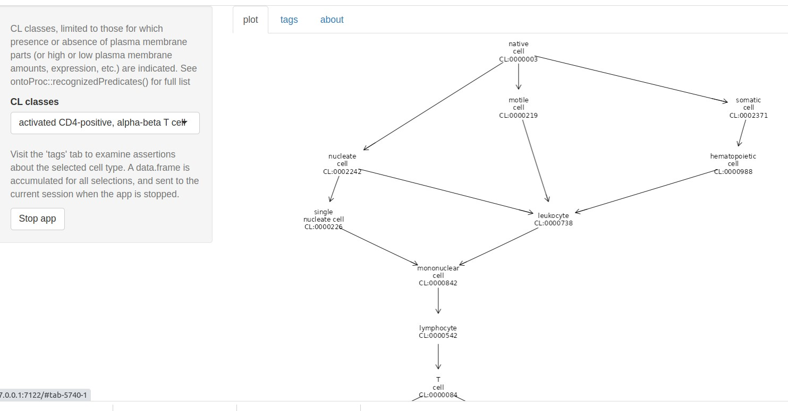
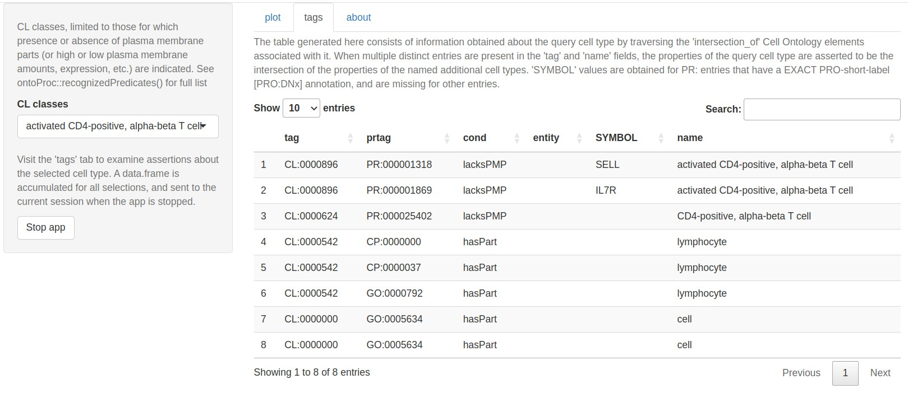
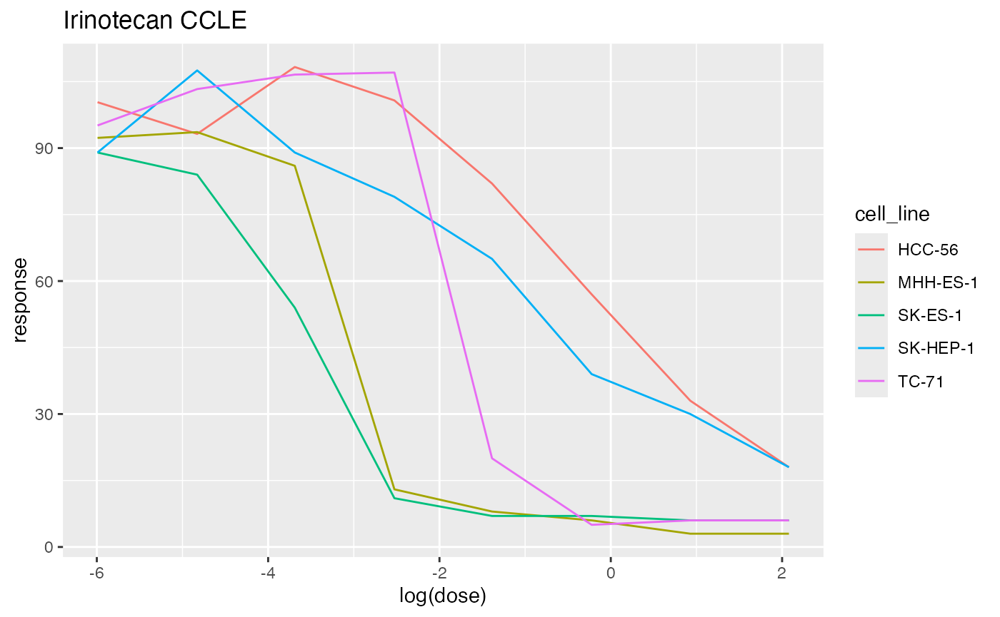

Ontology tools for computational genomic data science
Vincent J. Carey, stvjc at channing.harvard.edu
April 16, 2025
Source:vignettes/OntoTools.Rmd
OntoTools.RmdontoProc
This package enables users to explore and visualize relationships among concepts enumerated in biomedical ontologies.
Basic representations
ontoProc uses AnnotationHub to manage ontology representations. We can retrieve a recent version of the UBERON ontology as follows:
library(AnnotationHub)
ah = AnnotationHub()
query(ah, "ontoProc")## AnnotationHub with 41 records
## # snapshotDate(): 2024-10-28
## # $dataprovider: NA
## # $species: NA
## # $rdataclass: Rda
## # additional mcols(): taxonomyid, genome, description,
## # coordinate_1_based, maintainer, rdatadateadded, preparerclass, tags,
## # rdatapath, sourceurl, sourcetype
## # retrieve records with, e.g., 'object[["AH97934"]]'
##
## title
## AH97934 | caro
## AH97935 | cellLineOnto
## AH97936 | cellOnto
## AH97937 | cellosaurusOnto
## AH97938 | chebi_full
## ... ...
## AH111561 | hcaoOnto_2022.12.16
## AH111562 | mondo_2022.12.01
## AH111563 | patoOnto_2023.02.17
## AH111564 | PROnto_68
## AH111565 | uberon_2023.02.14## [1] "id" "name" "parents" "children" "ancestors" "obsolete"
ub$name[1:10]## BFO:0000001 BFO:0000002
## "entity" "continuant"
## BFO:0000003 BFO:0000004
## "occurrent" "independent continuant"
## BFO:0000006 BFO:0000015
## "spatial region" "process"
## BFO:0000016 BFO:0000017
## "disposition" "realizable entity"
## BFO:0000019 BFO:0000020
## "quality" "specifically dependent continuant"Visualization
We take advantage of Daniel Greene’s ontologyIndex suite of packages to produce visualizations of concept relationships.
cl = ontoProc::getOnto('cellOnto')
cl3k = c("CL:0000492", "CL:0001054", "CL:0000236", "CL:0000625",
"CL:0000576", "CL:0000623", "CL:0000451", "CL:0000556")
ontoProc::onto_plot2(cl, cl3k)Interactive app
The ctmarks function defines a shiny app that addresses cell-type-defining marker genes. Users select a cell type, and its position in the Cell Ontology network is rendered.

Using available inter-ontology relationships, protein and transcriptional annotations for the cell type are tabulated.

pogos
The pogos package confronts the relationships between ontologies for cells and cell lines and compounds used in pharmacology and pharmacogenomics.
The Cancer Cell Line Encyclopedia (CCLE) includes datasets describing sensitivity of cell lines to drugs. pogos provides tools for querying the PharmacoDB system and rendering sensitivity results from CCLE.
## DRTraceSet for 5 cell lines, drug Irinotecan, dataset CCLE
plot(iri)
Other tools
Bioconductor includes the rols package that interrogates the EBI Ontology Lookup Service.